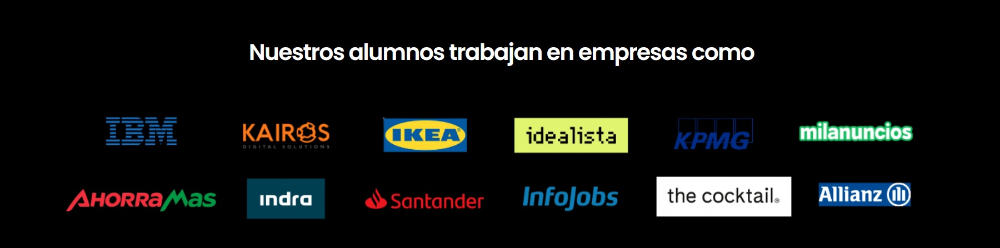

En Codenotch te convertimos
en un profesional Tech.
MORE THAN LEARN
BECOME
Cursos intensivos de Programación Web Full Stack y Data Analytics
Formación tecnológica con un claro objetivo
Convertir a nuestros estudiantes en auténticos profesionales de la programación impulsando su carrera en la industria digital.
Nuestra formación intensiva y práctica va dirigida a personas que desean formar parte del motor de cambio de la industria tecnológica en la era de la revolución digital.
Los Bootcamps son programas educativos vivos, en constante actualización para contener la evolución del sector. Son impartidos mediante una metodología personalizada, disruptiva y transformadora que cubre las necesidades de la realidad laboral.

92%
Tasa de Empleabilidad
24000€
Salario medio del primer empleo
34
Ediciones Impartidas